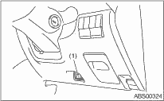

1. Before checking the idle speed, check the following item:
(1) Check the air cleaner element is free from clogging, ignition timing is correct, spark plugs are in good condition, and hoses are connected properly.
(2) Check the malfunction indicator light does not illuminate.
2. Warm-up the engine.
3. Stop the engine, and turn the ignition switch to OFF.
4. Insert the cartridge to the Subaru Select Monitor.
5. Connect the Subaru Select Monitor to the data link connector.

|
(1) |
Data link connector |
6. Turn the ignition switch to ON and the Subaru Select Monitor power switch to ON.
7. Select {Each System Check} in Main Menu.
8. Select {Engine Control System} in Selection Menu.
9. Select {Current Data Display & Save} in Engine Control System Diagnosis.
10. Select {Data Display} in Data Display Menu.
11. Start the engine, and read the engine idle speed.
12. Check the idle speed when no-loaded. (Headlight, heater fan, rear defroster, radiator fan, A/C and etc. are OFF)
Idle speed [No load and gears in “N” or “P” range]:
650±100 rpm
13. Check the idle speed when loaded. (Turn the A/C switch to “ON” and operate the compressor for at least one minute before measurement.)
Idle speed [A/C “ON” and gears in “N” or “P” range]:
800±100 rpm
NOTE:
Idle speed cannot be adjusted manually, because the idle speed is automatically adjusted. If the prescribed idle speed cannot be maintained, refer to the General On-board Diagnosis Table under “Engine Control System”.